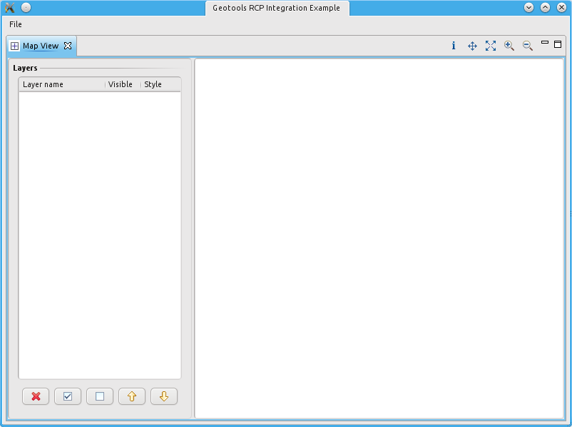
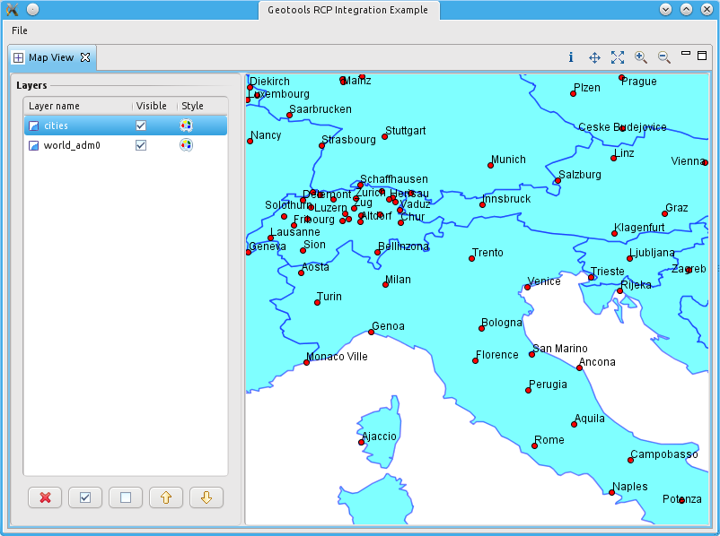

Rich Client Platform¶
Well , the reason for having an SWT module is to be able to exploit a lightweight map viewer inside an RCP application, whenever the “weight” of the RCP GIS application uDig is too much.
The Hello World RCP application¶
To integrate the gt-swt map panel inside an rcp application, we will start with an existing simple rcp hello world application that contains a view. To explain how to achieve that is beyond the aim of this tutorial, if you need help, there are a ton of tutorials out there that will guide you in that (one example is the really good rcp tutorial by Vogella).
References:
Put the map panel inside the rcp application¶
The source of the rcp application has been bundeled together with all the needed geotools libs and uploaded here. From here import the project into eclipse and you are ready to go.
Putting the gt-swt map panel inside the view of your application:
It is as easy as implementing the createPartControl method of the view like the following:
public void createPartControl( Composite parent ) { // handle icons, will be explained later handleImages(); // create the default mapcontext MapContext context = new DefaultMapContext(); context.layers(); // create the main composite, with or without layer panel Composite mainComposite = null; if (showLayerTable) { SashForm sashForm = new SashForm(parent, SWT.HORIZONTAL | SWT.NULL); mainComposite = sashForm; MapLayerComposite mapLayerTable = new MapLayerComposite(mainComposite, SWT.BORDER); mapPane = new SwtMapPane(mainComposite, SWT.BORDER | SWT.NO_BACKGROUND); mapPane.setMapContext(context); mapLayerTable.setMapPane(mapPane); sashForm.setWeights(new int[]{1, 3}); } else { mainComposite = parent; mapPane = new SwtMapPane(mainComposite, SWT.BORDER | SWT.NO_BACKGROUND); mapPane.setMapContext(context); } mapPane.setBackground(Display.getCurrent().getSystemColor(SWT.COLOR_WHITE)); // set the renderer StreamingRenderer renderer = new StreamingRenderer(); mapPane.setRenderer(renderer); }One method that has to be explained is the handleImages. Since the handling of file paths inside a java project and an rcp plugin project are quite different, the ImageCache isn’t able to retrieve the necessary icons fro the gui from the gt-swt module. Therefore it is necessary to supply the needed images to the cache before starting. This can be done as follows based on the rcp file path handling:
private void handleImages() { // get the image cache ImageCache imageCache = ImageCache.getInstance(); // get all the relative paths needed by the cache List<String> relativePaths = imageCache.getRelativePaths(); /* * Create all the needed images. The images have to reside in the plugin root * in the same folder structure as in the gt-swt resources folder. * * The icons of the gt-swt module are currently located in /icons/ */ for( String path : relativePaths ) { Image image = AbstractUIPlugin.imageDescriptorFromPlugin(GtSwtPlugin.PLUGIN_ID, path).createImage(); // feed the image into the cache for further use imageCache.addImage(path, image); } }For the exact same reason it is also necessary to have the language file of the gt-swt module insid the plugin root as:
/resources/Text.properties
in order to be properly picked by the plugin.
Adding the map tools as view actions¶
Right now we have only the map view. The best place to put the tools like pan and zoom is probably the toolbar of the map view. To do so, we can add a viewActions extention point to our view, then add a viewContribution to the viewActions and finally all the actions we need there.
To add the Info Tool action, you add:
<action class="org.geotools.swt.actions.InfoAction" icon="icons/info_mode.gif" id="rcp-gt-swt.info" label="Info Action" style="push" toolbarPath="gtswt"> </action>Then we have to implement the action itself.
That is fairly easy, since we can delegate the activation of the tools to the gt-swt map panel:
public class InfoAction implements IViewActionDelegate { private IViewPart view; public void init( IViewPart view ) { this.view = view; } public void run( IAction action ) { SwtMapPane mapPane = ((MapView) view).getMapPane(); mapPane.setCursorTool(new InfoTool()); } public void selectionChanged( IAction action, ISelection selection ) { } }The same applies to all other actions.
Resulting RCP¶
If everything went smooth, you should be able to run the application and see something like:
And with some layers loaded:
